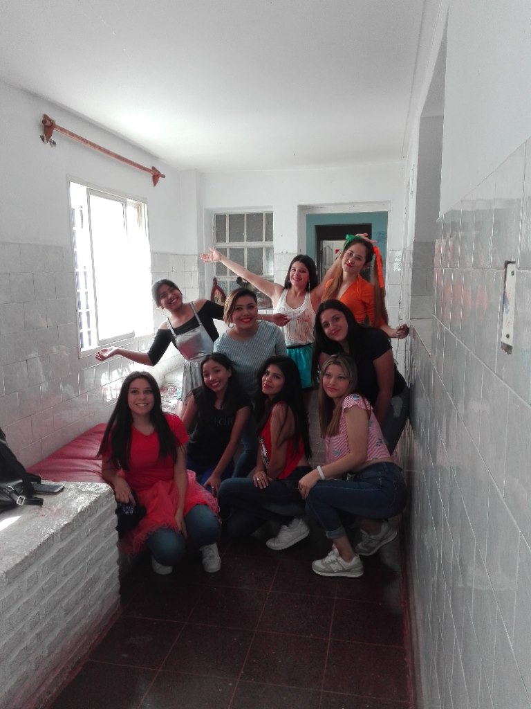

Dos mundos, el que habita y el que se habita en la poesía de Juan Carlos Osman
Sergio Lizárraga recorre la voz poética de Sírvase usted mi mundo e Inter criminis, entre lo íntimo, lo social y lo trascendente.
Leer en Fuga de NoticiasUn archivo vivo · Tucumán
Proyectos, lecturas y encuentros para descubrir, año a año.

El proyecto
Desde 2018, estudiantes y comunidades crean historias, libros y experiencias para compartir. Elegí un año y descubrí qué pasó.
Proyectos, lecturas y experiencias
Una pista, una imagen y una puerta de entrada a cada historia.
Cargando historias…
No se pudo cargar el archivo. Comprobá la conexión e intentá de nuevo.
Huellas públicas · Tucumán
Recortes y voces
Libros, proyectos y encuentros
Una selección de reseñas, noticias y publicaciones institucionales sobre el recorrido de Juan Carlos Osmán
Sergio Lizárraga recorre la voz poética de Sírvase usted mi mundo e Inter criminis, entre lo íntimo, lo social y lo trascendente.
Leer en Fuga de NoticiasEl Ministerio de Educación destaca la participación de Juan Carlos como escritor en una actividad de promoción de la lectura.
Leer en el Ministerio de EducaciónLa Gaceta anuncia la presentación del libro en la Casa de la Cultura de Tafí Viejo.
Leer en La GacetaLa publicación recoge aportes de Juan Carlos sobre alfabetización y el trabajo con estudiantes.
Leer en el Ministerio de EducaciónCada recorte enlaza a su publicación original. Las fechas corresponden a la publicación de la nota.
Una idea, una pregunta, una historia
¿Tenés una consulta o querés compartir algo? Enviame un mensaje y te responderé a tu correo